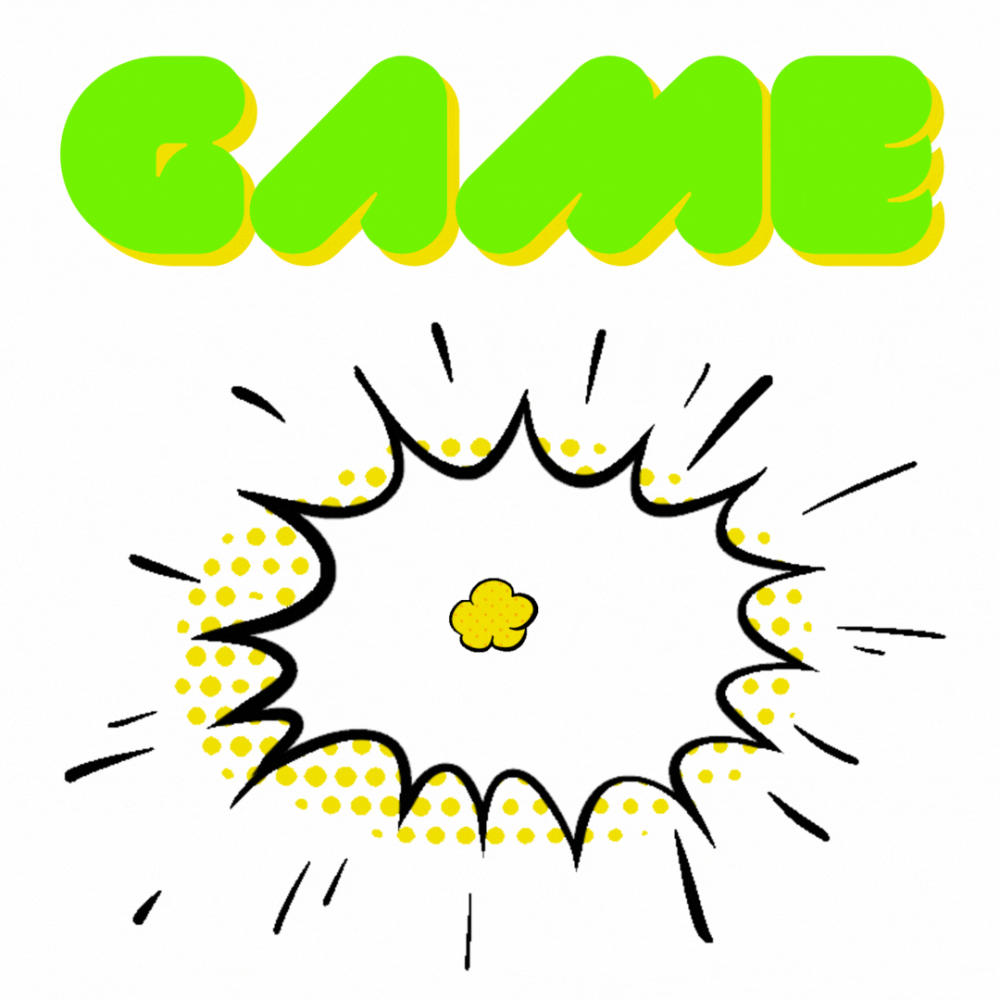

Vamos testar seus conhecimentos com o que vimos na aula!!!
Está pronto?
Perguntados
Um questionário de múltipla escolha com tempo, linhas de vida e uma rodada bônus.
Um questionário de múltipla escolha com tempo, linhas de vida e uma rodada bônus.